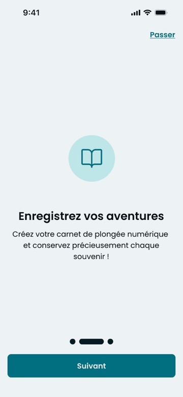
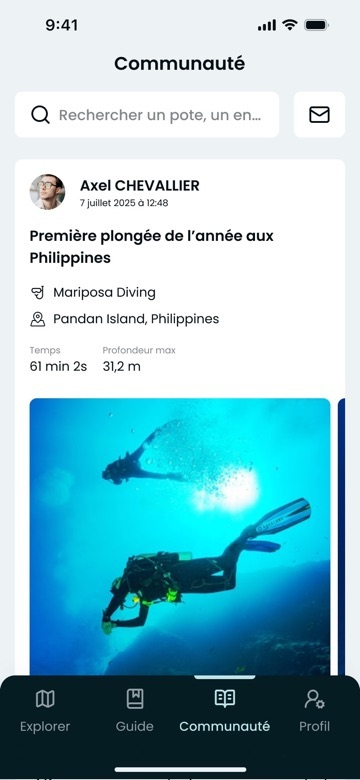
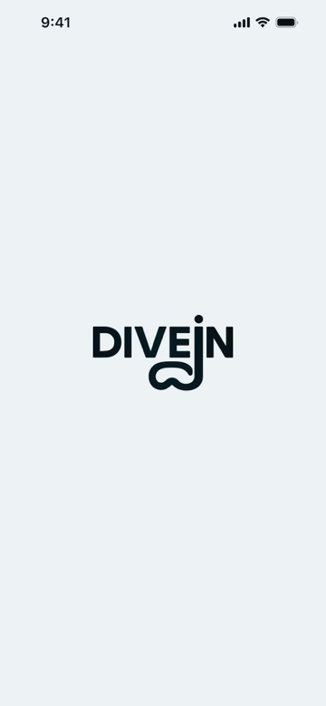
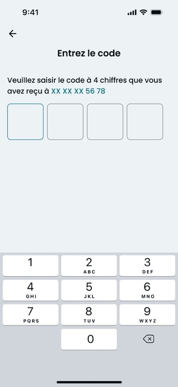
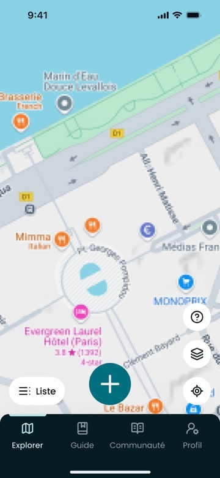
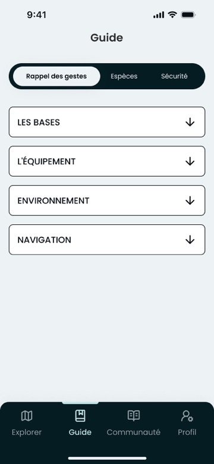
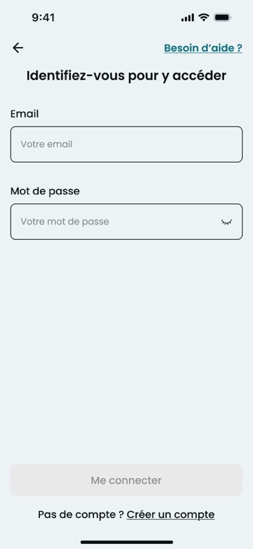
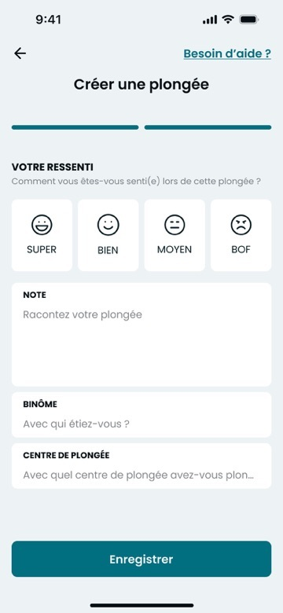
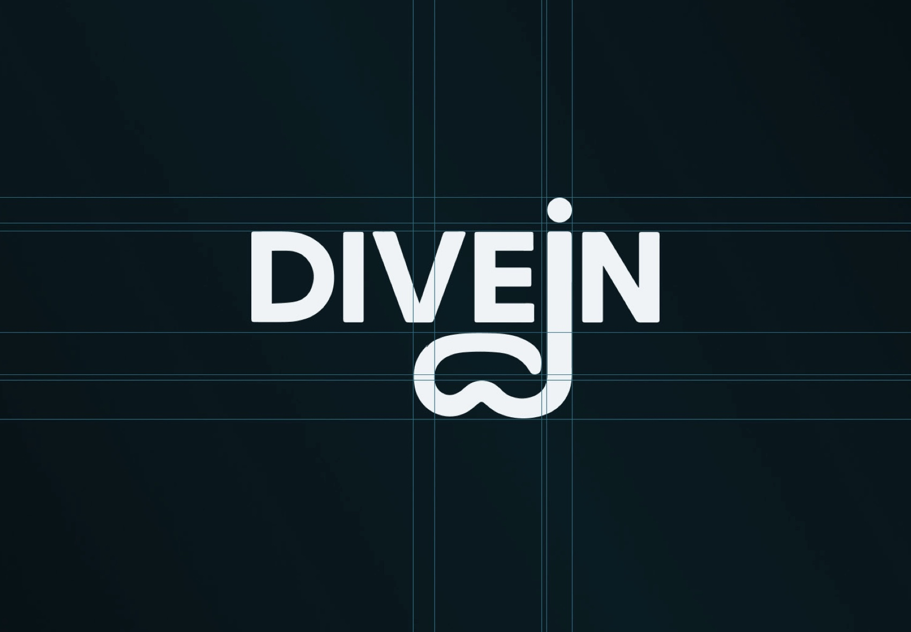

Simple avant tout
Même un baptême de plongée doit pouvoir utiliser l'app sans tutoriel. Pas de jargon, des icônes qui parlent.
Dans la V1 : des choix en un geste, illustrés par des icônes.
Une application mobile pour les plongeurs loisirs : noter chaque plongée en quelques secondes, même sans réseau, la retrouver, la partager et en garder un vrai souvenir.



Chez moi, la plongée est une affaire de famille. Mon père tient des carnets faits main, plastifiés, décorés de stickers et tamponnés avec soin. Les miens finissaient trempés au fond du sac étanche.
En France, on compte entre 400 000 et 500 000 plongeurs actifs, qui font en moyenne 8 plongées par an. Pourtant, très peu utilisent un outil numérique pour garder une trace de leurs plongées.
Pour documenter ses plongées, un plongeur loisir doit aujourd'hui choisir entre :
Comment concevoir une application intuitive, communautaire et utilisable hors ligne, qui transforme chaque plongée en souvenir ?
Quatre enseignements ont guidé toute la conception :
Les débutants se perdent, et même les confirmés refusent de passer 20 minutes à remplir une plongée.
Le carnet papier reste aimé, mais il se mouille, s'oublie ou se perd.
Sur un bateau, le réseau ne suit pas toujours. L'app doit marcher sans.
Les plongeurs veulent raconter leurs plongées et leurs spots, pas seulement aligner des chiffres.
« Si c'est plus compliqué qu'un selfie, j'abandonne. »
Motivée mais pas patiente, elle cherche de la sécurité, des repères visuels et une interface qui ne lui parle pas comme un manuel technique.
« Si je ne l'ai pas noté, ça n'a pas existé. »
Gardien de ses souvenirs, il veut retrouver toutes ses plongées en un clic, comparer ses statistiques et imprimer le tout dans un bel objet.
Alain, c'est mon père. Alice me rappelle que la simplicité fait partie du design. Chaque choix de fonctionnalité a été pensé pour eux deux.
L'opportunité : aucune application ne réunit à la fois la simplicité, le fonctionnement hors ligne et la dimension souvenir.
Quatre principes tirés de la recherche, qui ont servi de filtre à chaque décision.
Même un baptême de plongée doit pouvoir utiliser l'app sans tutoriel. Pas de jargon, des icônes qui parlent.
Dans la V1 : des choix en un geste, illustrés par des icônes.
Sur un bateau, le réseau ne suit pas. Tout est enregistré sur le téléphone, puis synchronisé au retour.
Pendant les tests : le hors ligne, cité comme « un vrai plus ».
Une plongée ne se mesure pas seulement, elle se revit : photos, espèces croisées, anecdotes.
Dans la V1 : un ressenti et un récit pour chaque plongée.
Partager avec ses binômes et ses clubs, sans course aux likes ni bruit inutile.
Dans la V1 : un fil où chaque plongeur partage ses plongées.
Pour lancer vite une version utile, j'ai trié les fonctionnalités avec la méthode MoSCoW, croisée avec les retours terrain. La règle : une fonction entre dans le MVP seulement si elle apporte une valeur immédiate, mesurable et différenciante.
J'ai testé le prototype haute fidélité Figma avec plusieurs profils : débutants, confirmés et clubs. Le test le plus parlant : celui de mon père, qui tient un carnet papier depuis 1997.
« Franchement, c'est hyper clair. J'ai mis moins de 2 minutes à remplir ma plongée… et j'ai pas eu besoin de chercher où cliquer. »
« Le mode offline, c'est vraiment un plus. Je pourrais remplir ça direct sur le bateau. »
« Ça me rappelle mon carnet, mais en plus propre… et surtout, sans risque de le mouiller ! »
Deux pistes retenues pour la prochaine version.
Le prototype haute fidélité conçu dans Figma et testé avec les plongeurs. Dix-sept écrans, regroupés par parcours.












Le nom se lit « Dive In » : plonge dedans. Dans le logo, le « I » devient un tuba associé à un masque : l'outil qui rend l'immersion possible, comme si l'on enfilait son tuba avant d'entrer dans l'app.
Les composants suivent la même logique : un design plat, lisible en plein soleil sur le bateau, et des icônes simples qui reprennent le vocabulaire de la plongée.

Le projet DC START est terminé, mais l'aventure continue : l'application va être refaite. La prochaine étape est de repartir de ce prototype et des retours des tests pour concevoir une nouvelle version, puis de la faire tester à nouveau par des plongeurs débutants et confirmés.
Télécharger le dossier completPDF · 106 pages · stratégie, recherche, design et business plan↓Disponible pour un CDI · Île-de-France
Je cherche une équipe où concevoir des produits utiles, du terrain jusqu'au code. Parlons-en.